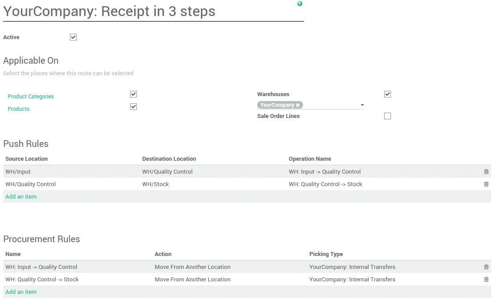
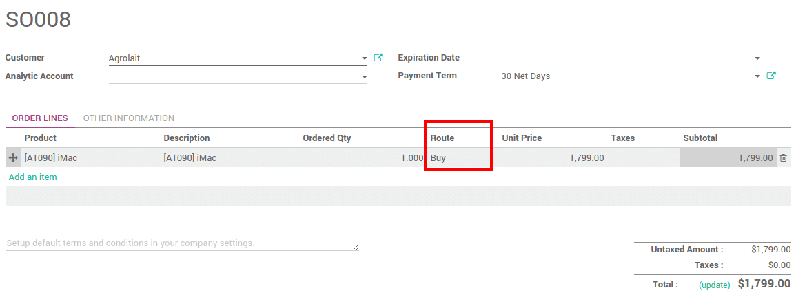

概述
路线就是推规则和拉规则的合并整理。YuanCloud可以配置高级推／拉路径的配置，例如：
管理产品的生产链
管理每一个产品的默认库位
根据业务需求在仓库中定义路线，例如质检，售后和供应商退货
通过生成自动的租用产品的退回调拨来帮助管理租借
配置
拉规则是路线的一部分，进入 库存**应用中： `配置 --> 设置` 并勾选**产品的高级路径规则。

预－配置路径
YuanCloud已经在仓库模块中预定义了一个路径。
在仓库模块中，点击 。
在**仓库配置**页面，[UNKNOWN NODE problematic]入库**和**出库**的选项会根据你的选择而创建响应的路线。

定制路径
在仓库模块中，进入：[UNKNOWN NODE title_reference]。
首先，需要选择该路径能被选择的地方，也可以组合不同地方。
仓库中应用的路径
如果在路线中勾选了**仓库**，就需要设置该路径适用于哪个仓库。该路线可以被设置在该仓库中的所有满足路线中推拉规则的调拨中。

产品上应用的路径
如果选择了**产品**，你就可以在产品上设置路径

打开想要设置该路线的产品(:[UNKNOWN NODE title_reference]). 在库存页面中,选择路线(可以多选):

产品种类上使用的路径
如果你勾选了**产品种类**，你需要手工的设置该产品属于那个种类。

打开想要设置该路线的产品(:[UNKNOWN NODE problematic]配置 --> 产品种类 [UNKNOWN NODE problematic]).在**物流**部分选择路径(可以多选)：
销售订单行上的路径
如果勾选了**销售订单行**，你就可以每次创建小受受订单的时候手工的设置路径。

为了能正常使用，我们需要激活销售订单上的路径这一功能。
在销售模块，进入：[UNKNOWN NODE title_reference] 并勾选**在销售订单选择特定的路线(高级)**。

现在可以给销售订单的每条订单行选择路径：
拉规则和推规则
请参照文档
补货配置
在进行补货时，你可以强制使用想要使用的路线。在产品(：[UNKNOWN NODE title_reference])，点击**补货需求 [UNKNOWN NODE problematic]。在**优先路线**旁边选择想要使用的路径。

按订单补货配置
如果想要无库存，或者保持最低库存，最好使用**按订单补货**的路径。然后和**买**或者**生产**的路径结合，之后系统就会根据路径设置在没有库存的时候自动触发采购订单或者生产订单。